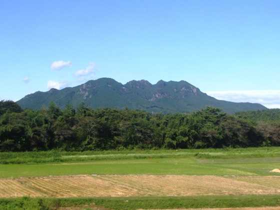
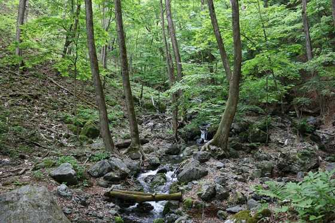
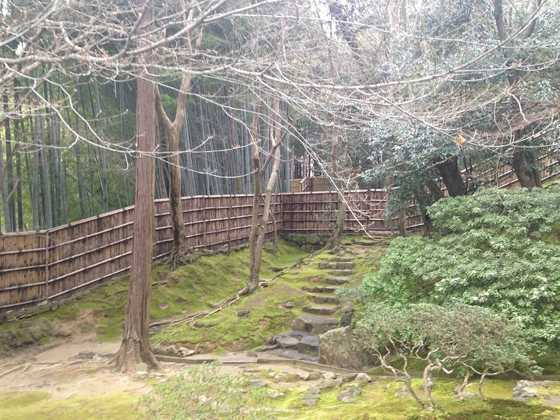
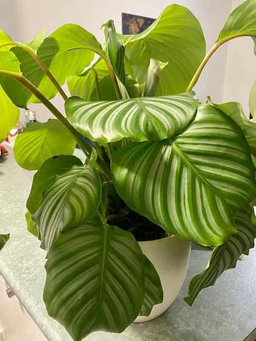
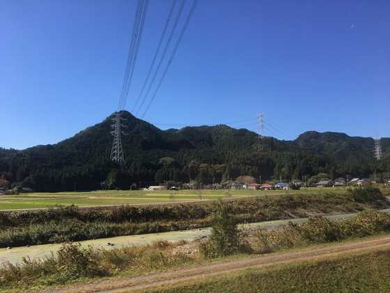
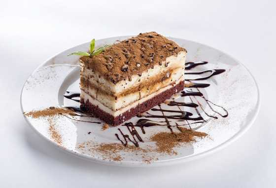
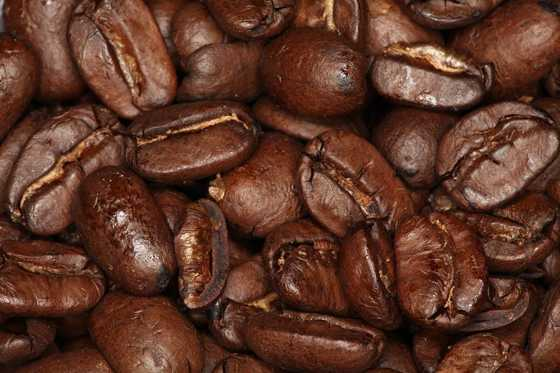

栃木県那須町稲沢・森のぶどう園のはなれ
ぶどうと米のめぐみを、
森のはなれでひと休み。
民家のはなれで営む、米粉のクレープとコーヒーのカフェ。実りの景色のなかで、ゆっくりどうぞ。
お店のこと
ぶどう園のとなりの、小さなカフェ。
穂ほ笑みの森は、那須町稲沢にあるカフェです。Instagramでは「森のぶどう園」として紹介されており、シャインマスカットの販売(2026年9月予定と記載)や、民家のはなれでのカフェ営業が案内されています。
カフェでは、自家製の米粉のクレープと挽きたてコーヒーを提供。小麦を使わないグルテンフリーで、お腹の弱い方や小麦アレルギーの方にも、と紹介されています。敷地内ではどぶろくやお米の販売もあると掲載されています。
店名の「穂」に、実りの穂(米やぶどうの房)を重ねた、というのは制作側のイメージです。店名の由来そのものは確認できていません。







メニュー
米粉のクレープと、一杯のコーヒー。






価格・営業時間・定休日は変更されることがあるため 準備中 としています。最新情報はInstagramをご覧ください。
口コミ
お客様の声(イメージ例)
イメージ例
田んぼと森に囲まれて、静かな時間が流れていました。クレープがやさしい味で、ほっとしました。
イメージ例
小麦が苦手でも食べられるのがありがたいです。コーヒーも香りがよく、また来たくなりました。
イメージ例
ドライブの途中に立ち寄りました。のんびりくつろげて、おみやげにお米も気になりました。
上記は制作側が作成したイメージ例で、実際のお客様の声ではありません。